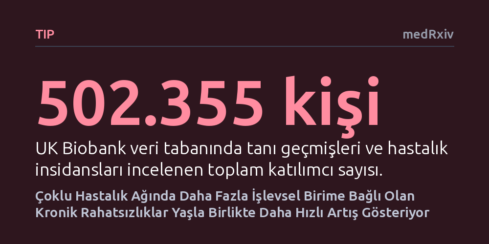

TIP · medRxiv · 2026-10-07
Araştırmacılar, kronik hastalıkların yaşlandıkça farklı hızlarda ortaya çıkmasının nedenini 500 binden fazla kişinin verileriyle inceledi. Çoklu hastalık ağında daha fazla işlevsel birimle ilişkili rahatsızlıkların, yaş ilerledikçe belirgin biçimde daha dik bir artış gösterdiği saptandı.
Kronik hastalıkların rastgele değil, tıpkı kanser gibi birden fazla hücresel ve genetik bileşenin kademeli bozulması sonucu yaşa bağlı olarak farklı hızlarda ortaya çıktığını gösteriyor.

Kanser vakalarının yaş ilerledikçe neden katlanarak arttığı sorusu, uzun yıllardır çok basamaklı karsinojenez modeliyle açıklanır. Bu yaklaşıma göre hücreler tek bir hata yüzünden değil, zaman içinde biriken birden çok bağımsız hasar sonucunda kontrolden çıkar. Benzer bir ilke mühendislikteki güvenilirlik kuramında da karşımıza çıkar; karmaşık sistemlerin çökmesi, tek bir parçanın aksamasından ziyade birçok bileşenin sırayla arızalanmasını gerektirir.
Araştırmacılar, bu mantığın diğer kronik hastalıklar için de geçerli olup olamayacağını sorguladı. Kalp-damar sorunları veya metabolik rahatsızlıklar gibi kronik durumların tümü yaşla birlikte artsa da, bu artışın hızı ve ivmesi her hastalıkta aynı değildir. Kimi rahatsızlıklar orta yaştan itibaren hafif bir artış sergilerken, kimileri ileri yaşlarda çok daha dik bir tırmanış gösterir. Çalışmanın temel amacı, birden fazla kronik rahatsızlığın bir arada bulunması anlamına gelen multimorbidite yapısının bu hız farklarını ve arkasındaki ortak mekanizmaları açıklayıp açıklayamayacağını anlamaktı.
Bu sorunun peşine düşen ekip, Birleşik Krallık Biobank veri tabanında yer alan 502.355 katılımcının sağlık kayıtlarını mercek altına aldı. Analizin güvenirliğini korumak amacıyla, katılımcıların ilk değerlendirme öncesinde birlikte geçirdikleri hastalıklar ile sonraki takip sürecinde ortaya çıkan yeni vakalar birbirinden bağımsız olarak ele alındı. Araştırmacılar, toplam 232 farklı tanı arasındaki karmaşık birliktelik örüntülerini çözmek için üretken temsil öğrenimi adlı yapay zeka yöntemini kullandı.
Bu yöntem sayesinde hastalık örüntülerinin altında yatan ve 'işlevsel birimler' adı verilen temel biyolojik bileşenler haritalandırıldı. Her bir tanının bu işlevsel birimlerden kaç tanesiyle bağlantılı olduğu belirlendi. Üretilen modellerin ve genetik bağlantıların tutarlılığı, yalnızca İngiltere verisiyle sınırlı tutulmayıp Finlandiya'daki FinnGen ve ABD'deki Million Veteran Program adlı bağımsız veri tabanlarında da sınandı.
Analiz sonuçları, bir hastalığın bağlı olduğu işlevsel birim sayısı arttıkça, o hastalığın yaşa bağlı görülme sıklığındaki artışın çok daha dik bir hal aldığını ortaya koydu. İncelenen tanılarda işlevsel birim çeşitliliği ile yaşa bağlı insidans artış hızı arasında belirgin bir korelasyon (Spearman rho = 0,50; tehlike oranı yaşla artan 196 tanı için rho = 0,4618) belirlendi. Dikkat çekici bir diğer bulgu ise bu ilişkinin, yaş faktörü modelden bütünüyle çıkarıldığında bile gücünü koruması oldu.
İşlevsel birimlerin incelenen genetik yapıları da birbirinden belirgin biçimde farklı biyolojik temellere işaret etti. Yapılan genom çapında ilişkilendirme çalışmaları (GWAS), standart tanı veya beden kitle indeksi karşılaştırmalarının tamamen gözden kaçırdığı 34 yeni genetik bölge tespit etti. İnce haritalama ve moleküler kanıtlar, bu bölgelerde yer alan aday genlerin halihazırda onaylanmış ilaç hedefleriyle zenginleştiğini gösterdi.
Araştırmanın ortaya koyduğu bulgular, çok basamaklı başarısızlık ilkesinin kanser sınırlarını aşarak genel kronik hastalıklara da taşınabileceğini gösteriyor. Bir hastalığın ortaya çıkması için arka planda ne kadar çok sayıda bağımsız işlevsel sistemin bozulması gerekiyorsa, o hastalık yaşlandıkça o kadar dik bir artış ivmesi yakalıyor. Bu durum, kronik rahatsızlıkların tekil ve tesadüfi olaylar değil, sistemik bileşenlerin kademeli arızaları olduğunu düşündürüyor.
Çoklu hastalık yapısının sunduğu bu yeni işlevsel harita, tıp dünyasının hastalıklara yaklaşımında önemli bir bakış açısı değişikliğini destekliyor. Rahatsızlıkları birbirinden yalıtılmış tekil tanılar olarak görmek yerine, onları besleyen ortak biyolojik ve genetik işlevsel birimlere odaklanmak gerekiyor. Yeni saptanan genetik bölgelerin onaylı ilaç hedefleriyle örtüşmesi, gelecekte birden fazla kronik hastalığın yaşa bağlı tırmanışını aynı anda yavaşlatabilecek tedavilerin önünü açabilir.